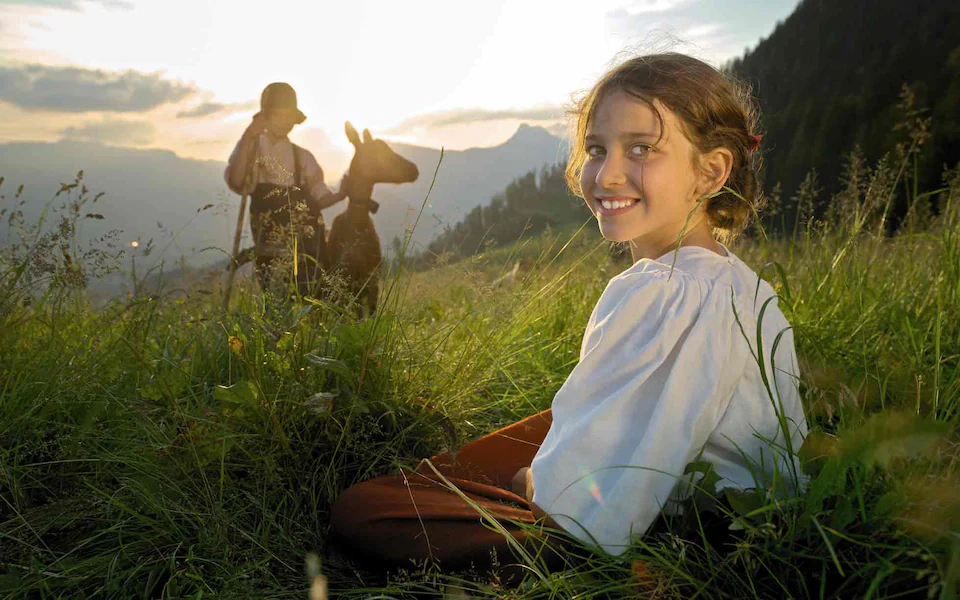
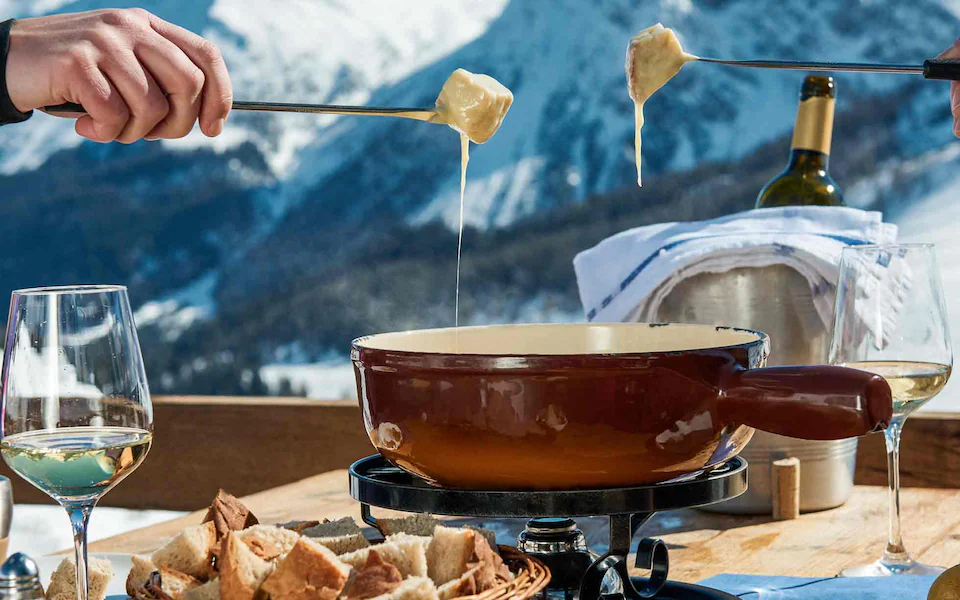
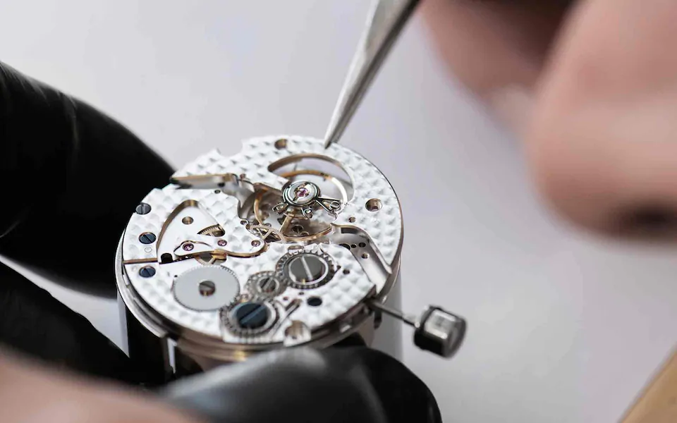
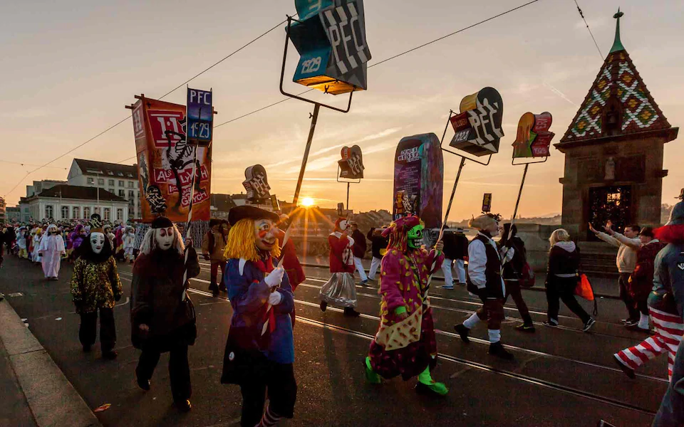
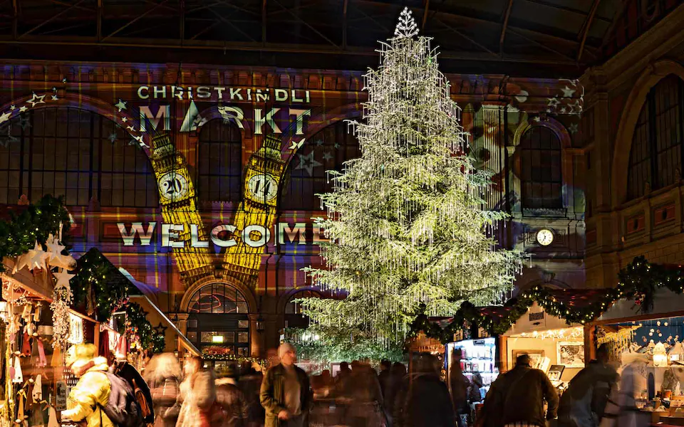

Switzerland is known for its breathtaking mountain massifs, and Rigi is one of them. Lauerz, Lucerne, and Zug lakes surround this stunning massif and make it look very enchanting. You can go on the beautiful and well-maintained hiking tops to get a panoramic view of this stunning place
Matterhorn, Switzerland Masterful: beyond the majestic scenery, Switzerland has many other things to get excited about Caroline Fink There are things that represent a country to the rest of the world like no other – and when it comes to Switzerland, if you look beyond the alpine ranges, glaciers, ski slopes and lakes, it’s the little things that loom large. Little things like chocolate, or the national dish of fondue – the fish and chips of the ski-loving set. There’s precision watchmaking, too, the results of which sit in the windows of the world’s most exclusive jewellers. Then there are the seasonal festivals such as Basel’s spectacular Fasnacht, the biggest festival in Switzerland, held each year as the last hurrah before the fasting period begins after Ash Wednesday. Whether you stir them, swallow them, wear them or revel in them, these are six of the best representations of Switzerland’s ineffable magic.
1. Heidi The world is not short of classic orphan stories – Oliver Twist, Harry Potter and Mowgli all spring to mind – but Heidi tops them all. One of the world’s best-selling books, and Switzerland’s most famous literary character, her adventures with her grandfather, young Peter the goatherd and her friend Klara are as embedded in the global imagination as the Matterhorn is into the high Alps. Since its 1881 publication, there have been innumerable film, TV and stage adaptations, as well as computer games and even a Heidiland theme park in Maienfeld, an area also famed for the quality of its local wines. You may want to raise a toast.
col2. Fondue Officially the Swiss national dish – and popularised by the Swiss Cheese Union since 1930 – the first recorded fondue recipe dates back to 1699. With powerful rustic associations – think of England’s ploughman’s lunch – the introduction of corn starch to its mix of gruyere and wine made fondue that much smoother and more popular, and as its popularity grew, so did the number of recipe variations. Even the fondue set has become something of a Swiss icon, and like many good things, the best bit of the dish is to be found at the bottom. Just don’t drop your bread while dunking – or you’ll be liable to pay a potentially embarrassing forfeit.
3. Chocolate Possibly Switzerland’s second national dish, fine, melt-in-the-mouth chocolate has long been synonymous with the country, ever since the world’s first mechanised chocolate factory opened in Vevey, along with the innovations of messrs Rodolphe Lindt,Henry Nestle and Theodore Tobler – household names to this day. What they did was to smooth out the original gritty, chewy chocolate of the day, and add new ingredients such as milk, nougat and almonds. Lindt’s new Home of Chocolate museum in Kilchberg, just south of Zurich, is the world’s largest, complete with a 10m-high chocolate fountain. Willy Wonka would be in heaven.

4. Watches Time is money, and time is a luxury, too – and both converge in Switzerland’s world-class reputation for high-end horology. As renowned for punctuality as it is for precision, luxury timepieces, Switzerland’s centre for all things horological is the town of La Chaux-de-Fonds, some 1,000m up in the Jura region, and a Unesco World Heritage site since 2009. Famous as the birthplace of the architect Le Corbusier, it’s even more renowned as world capital of the watchmaking industry. Its Musée International de l'Horlogerie houses more than 4,500 exhibits, including 2,700 watches and 700 wall clocks. It opens at 10am. Don’t be late.
5. Fasnacht You might associate the spirit of carnival more with Brazil thanBasel, but the city’s 72-hour Fasnacht carnival, a winter festival held from Ash Wednesday each year, is Switzerland’s largest, and ranked among the top 50 festivities in Europe. Kicking off at 4am, when all the city’s lights are extinguished, a cry of “Die drey scheenschte Dääg!” (the three most beautiful days) rings out, the air turns thick with the sound of piccolos and drums, and under the lights of hundreds of lanterns the masks and costumes on display are by turns outlandish, grotesque, fantastical and extraordinary. It’s little wonder that the festivities have been accorded their own Unesco World Heritage status.
6. Christmas markets They begin to appear at the end of November and throughout the season of Advent, their illuminations transforming many a town and city square across the country, but nowhere more so than in Zurich, home to six of the best. From Basel to Baden, Lucerne to Lugano, these fairytale festivals celebrate the yuletide season in style, with vast indoor markets, twinkling ice-skating rinks and huge Swarovski-bejewelled trees. Some, like the market held in the Niederdorf quarter of Zurich’s Old Town, are long established, romantic and picture perfect. Others, like Berner Sternenmarkt in Bern, have a more modern feel to them with designer products on sale. Whichever you choose you’re in for a festive treat, as these magical events are the epitome of Christmas.
Switzerland is easily reachable via train from London or by Swiss International Air Lines. And once you land, the famously efficient public transport will take you the regions you want to visit by train, bus or boat using the Swiss Travel Pass, available from the Switzerland Travel Centre.
Discover Switzerland Switzerland's unique mountain scenery is as iconic as its watches, cheese and chocolate. Connecting with its natural beauty on skis or snowshoes is as rewarding as experiencing the urban flair and quality of life synonymous with Swiss cities. So whether you’re travelling now or planning ahead, discover Switzerland at myswitzerland.com